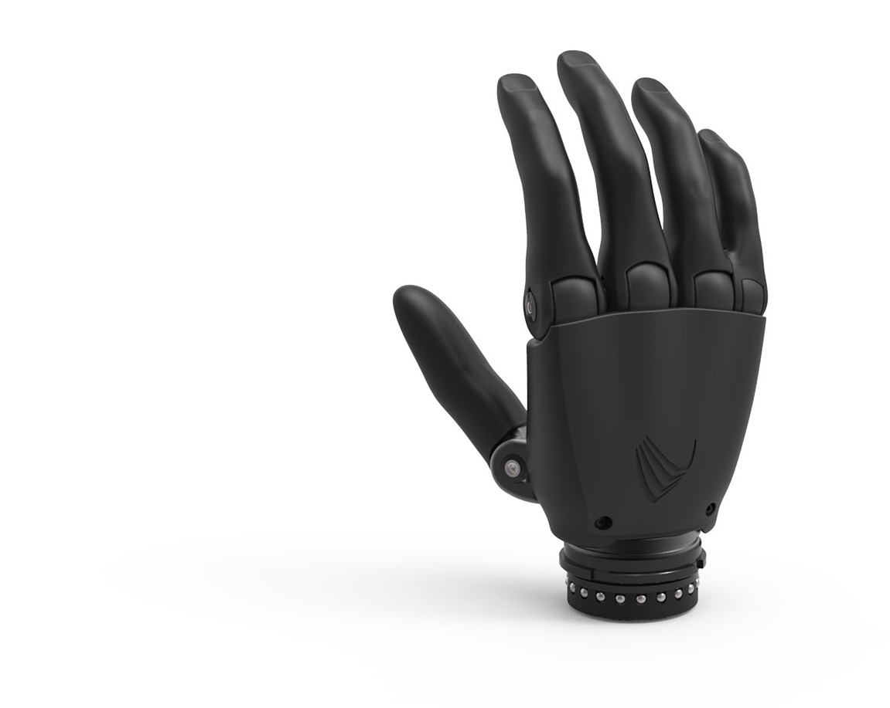

Resume
Education
Full-Stack Web Development
Ada Developers AcademyOngoing
- Ruby
- HTML & CSS
- Ruby on Rails
- Javascript
Code samples available on  .
.
Master of Prosthetics and Orthotics
University of Washington2013-2015
Bachelor of Science in Biological Sciences
University of Southern California2009-2012
Work
Prosthetist Orthotist
Center for Prosthetics Orthotics, Inc.2015-2020
Assessed patients’ mobility impairments and empowered them to achieve their mobility goals with prosthetic and orthotic devices. Built clinic’s intranet, e-workflows, and low-code apps to improve efficiency and allow collaboration among multiple departments.
Digital Arts Lab Assistant
UW Digital Arts and Experimental Media Fabrication Lab2013-2015
Instructed students on use of advanced machining tools, such as digital fabrication tools
Research Assistant
USC School of Pharmacy2011-2012
Publications
- P2X4 knock out mice display sex differences in alcohol intake and behavioral responses [abstract]
- Alcohol intake in male and female P2X4 knock out mice is significantly altered compared to littermate controls [poster]
- Reduction in joint loading and pain with use of laterally wedged insoles in individuals with medial compartmental knee osteoarthritis: A Critically Appraised Topic
Service
- Interdisciplinary Service Trip with Hearts in Motion and Range of Motion Project in Guatemala
- Interdisciplinary Project with UW Mechanical Engineering Department
- Global Rehabilitation Organization at Washington (GROW) Member
- Mobility Outreach International Volunteer
- Össur and Challenged Athletes Foundation’s Running & Mobility Clinic Volunteer
- Northwest Chapter of American Academy of Orthotists & Prosthetists Secretary
- American Academy of Orthotists & Prosthetists Member
Testimonials
One of the most impressive things about Christina is her ability to learn systems of production that are often outside her field of study quickly and with minimal instruction...Within a few weeks she had not only learned enough to help our students with their projects, but was also showing me more efficient techniques to accomplish many of the daily tasks. In her own uniquely humorous and humble fashion, she deflected the praise with “I’m just lazy, so I always look for the simplest solutions”. Our lab has since adopted the practice of using “lazy” and “efficient” interchangeably as a result... In my experience, extreme intelligence, honesty, independence and critical thinking skills are not often paired with social ease and grace. Christina Minh is one of the rare exceptions. I have no doubt she will enrich any environment she chooses to become a part of.
- Jimmy Johnson
She is driven toward excellence and welcomes challenges. She is attentive to instruction and grasps concepts quickly. Furthermore, Christina puts forth the effort to investigate and study presented material that is new to her.
- Greg Zschaschel, CPO